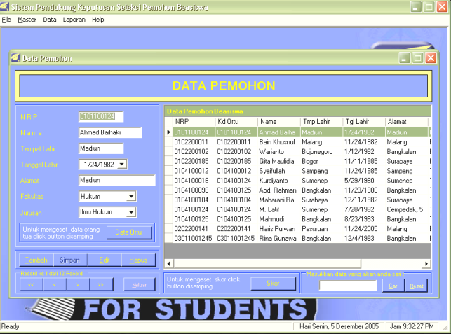

7.2 Dialog Berbasis Pengisian Borang
Teknik dialog berbasis pengisian borang (form filling dialogue) merupakan suatu penerapan langsung dari aktifitas pengisian borang dalam kehidupan sehari-hari dimana pengguna akan dihadapkan suatu bentuk borang yang ada di layar komputer yang mereka gunakan.
Kualitas antarmuka berbasis pengisian borang tergantung pada tiga aspek:
▪ Tampilan pada layar monitor yang mencerminkan struktur data masukan yang diperlukan oleh sistem.
▪ Kejelasan perancangan dan penyajiannya secara visual pada layar monitor.
▪ Derajat kebenaran dan kehandalan penerimaan data masukan oleh program lewat
▪ berbagai fasilitas pemasukan data yang ada di dalam borang tersebut.
Contoh tampilan berbasis pengisian borang

Hal yg perlu diperhatikan dalam perancangan tampilan
1. Proteksi tampilan, pembatasan tampilan yg tidak dapat diakses pengguna.
2. Batasan medan tampilan, penentuan panjang yang tetap atau berubah, menggunakan format bebas atau tertentu.
3. Isi medan, petunjuk pengisian tampilan.
4. Medan opsional, dinyatakan secara tekstual atau menggunakan aturan tertentu, seperti penggunaan warna berintensitas rendah, warna tampilan yang berbeda, dan lain-lain
Hal yg perlu diperhatikan .... (cont..)
1. Default, tentukan tempatnya, apakah pada bagian yang tidak dapat diakses pengguna ataukah pada bagian pemasukan data.
2. Bantuan, bantuan (help) cara pengisian borang.
3. Medan penghentian, Masukan data dapat diakhiri dengan menekan tombol Enter atau Return atau mengisi karakter terakhir dengan karakter tertentu atau dengan cara berpindah ke medan lain.
4. Navigasi, menggunakan tombol Tab untuk urutan yang tetap, atau dapat pula digerakkan secara bebas menggunakan mouse.
5. Default, tentukan tempatnya, apakah pada bagian yang tidak dapat diakses pengguna ataukah pada bagian pemasukan data.
6. Bantuan, bantuan (help) cara pengisian borang.
7. Medan penghentian, Masukan data dapat diakhiri dengan menekan tombol Enter atau Return atau mengisi karakter terakhir dengan karakter tertentu atau dengan cara berpindah ke medan lain.
8. Navigasi, menggunakan tombol Tab untuk urutan yang tetap, atau dapat pula digerakkan secara bebas menggunakan mouse.
9. Pembetulan kesalahan, menggunakan tombol BackSpace engan menindihi (overwrite) isian lama, dengan jalan membersihkan dan mengisi kembali medan tersebut, dan lain-lain.
10. Penyelesaian, memberitahu pengguna bahwa seluruh proses pengisian telah selesai.
Keuntungan dan Kerugian
A. Keuntungan Dialog Berbasis Pengisian Borang yaitu:
▪ pengguna sudah terbiasa dengan pengisian borang
▪ isian data yang disederhanakan
▪ diperlukan sedikit pelatihan
▪ beban memori rendah
▪ strukturnya jelas
▪ perancangan mudah
▪ tersedia berbagai piranti bantu perancangan tampilan
B. Kerugian Dialog Berbasis Pengisian Borang yaitu:
▪ seringkali lambat
▪ memakan ruang layar (khususnya untuk menu datar)
▪ tidak cocok untuk pemilihan perintah/instruksi
▪ memerlukan pengontrol kursor
▪ mekanisme navigasinya tidak terlihat secara eksplisit
▪ memerlukan suatu bentuk pelatihan